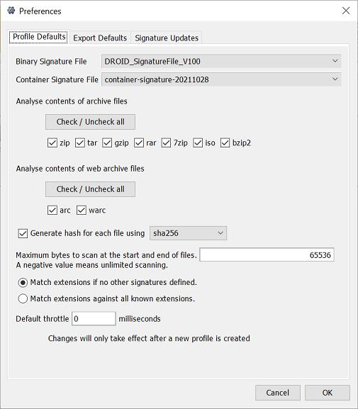
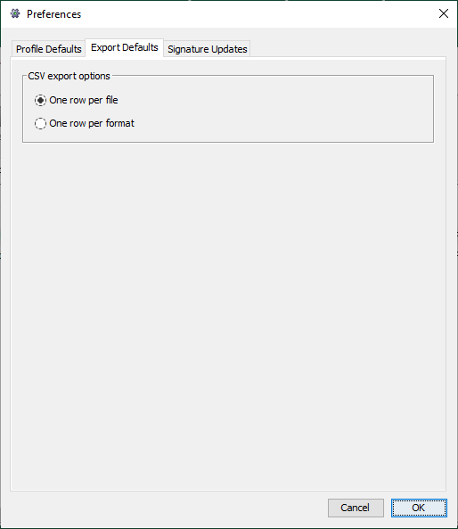
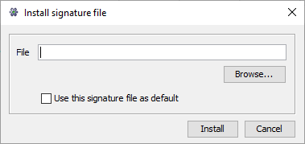

Configuration
Profile defaults
The Profile Defaults tab contains the settings used when creating a new profile.
Binary signature file
The binary signature file is the version of the binary signatures to use when trying to identify file formats. Binary signatures are patterns to find inside the file in order to identify its file format. Once a profile has been created, you cannot change the binary signature file it uses. It is recorded with the profile when you save it.
Container signature file
The container signature file is the version of the container signatures to use when trying to identify file formats. Container signatures identify file formats by looking for embedded files inside the main files. Binary signatures can be applied to these embedded files. This improves the accuracy of recognition for these types of file formats, as the search is confined to the specified embedded files, not to the entire containing file. Once a profile has been created, you cannot change the container signature file it uses. It is recorded with the profile when you save it.
Analyse contents of archive files
If this option is checked, then DROID will look inside zip, tar and gzip files and profile the files it finds inside them.
Analyse contents of web archive files
If this option is checked, then DROID will look inside arc and warc files produced by crawling web pages, and profile the files it finds inside them. If the Analyse archive option is not checked as well, DROID will only look inside unzipped arc and warc files. Note that the file type stored in a web archive file will often not be the same as the file type of the web page that produced it (eg. a GIF image generated by a PHP page).
Generate MD5 hash for each file
If this option is checked, then DROID will produce a hash (checksum) for the content of the file. By default this option is off, as generating hashes slows down profiling significantly. The hash type defaults to MD5, but other options (e.g. SHA256, SHA512) can be selected as an alternative. Read "Detecting duplicate files" for more information on why you may want to generate hashes.
Maximum bytes to scan
When DROID is trying to identify files, it looks inside the files for common patterns. This setting allows you to configure how far from the beginning or end of the file DROID will scan before it stops trying to identify the file. This has a large effect on the performance of DROID, and a smaller effect on the accuracy of its identifications.
Almost all patterns which identify the format of files are found fairly close to the start or end of the file. By default, this setting is 65536 bytes (64KB). You can make it smaller, and DROID's performance will increase, but the accuracy of identifications may go down. Alternatively, you can make it bigger, and the performance of DROID will go down, and the identification accuracy may go up.
Setting this value to a negative number (e.g. -1), will cause DROID to scan the entire file (possibly more than once, if different patterns trigger those scans). This setting gives the maximum possible accuracy DROID can achieve, but can cause DROID to profile very slowly, particularly if you have large files.
If you do have files which are not being identified, you can increase this value, or set it to -1, to see if this has any effect on identification accuracy. If it still can't identify those files on a large setting (or the unlimited -1 setting), then you should probably choose a smaller value to increase the identification performance.
Match extensions if no other signatures defined
If this option is selected, DROID will only attempt to match file extensions for formats for which no other binary or container signatures are defined. The thinking here is that, if a presumably more accurate signature failed to match the file format, then matching against the extension alone would give potentially misleading results. This is the default behavior, and is the same as previous versions of DROID.
Match extensions against all known extensions
If this option is selected, DROID will attempt to match a file extensions against all known extensions. This may be helpful if you find you have files in newer formats, for which there is currently no good binary or container signature, or you have unusual files for which the existing signatures fail to match. Using this option will produce identifications for more files, and more multiple identifications for files.
Default throttle
This is the delay in milliseconds that DROID should pause between identifying files read from the file system. Specifying a higher delay will cause DROID to work slower, placing less load on your computer, network or disk storage. It does not cause a pause between identifying files inside archival files.
Unless you need to slow DROID down, this should be set to zero. Unlike the other profile preferences, this value can be dynamically adjusted while running using the throttle slider control on the main window. The throttle setting can be different for each profile, and will be saved with the profile.
Signature updates
This tab allows you to configure where DROID should try to update its signatures from, and how often.
Binary signatures URL
The web address where DROID can find a PRONOM-compatible web service to download binary signature updates.
Container signatures URL
The web address where DROID can find the container signature file. Container signature files do not require specialised PRONOM web services to download from - a file available on a standard web server is sufficient.
Proxy settings
Clicking this button will allow you to configure network proxy settings if your network has a proxy. Please consult your network administrator for details of any proxy settings you may need to make.
Automatically check for updates
If this box is checked, then DROID will automatically attempt to look for updated signatures according to the schedule you specify:
Update settings
- Every time DROID starts up - DROID will try to check for signature updates when it starts.
- Every X days - on starting up, DROID will check for signature updates after the number of days since the last check. Note that if you leave DROID running for more days than is specified, it will not automatically try to update its signatures. The check is still only made on startup, but only if the number of days since the last time it checked has elapsed.
- Prompt before downloading - If this box is checked, DROID will prompt you before downloading new signatures.
- Use updated signature files by default - If this box is checked, DROID will automatically use a newer signature file by default. If it isn't checked, it will still download the file, so it is available for selection in the profile default tab, but it will not automatically make it the default signature file to use.
PUID URL pattern
The PUID URL pattern is the web location which DROID will connect to when clicking
on a PUID hyperlink in the profile tab. This should contain the URL to connect to, and
the place into which the PUID should be inserted is indicated by %s For example, if we were to click on
a hyperlinked PUID of fmt/111 in the main profile results,
DROID would launch your web browser at the address: https://nationalarchives.gov.uk/pronom/fmt/111
Export defaults
The Export Defaults tab contains miscellaneous settings, to configure how DROID exports CSV files by default.
Default CSV export options
DROID can export profiles to CSV files in two ways: one row per file, and one row per format. See exporting profiles for more information on each of these options. The settings here only configure the default for export. When you export, you can select which you prefer on a per-export basis.
Startup configuration
There are some settings which DROID needs to be told at the point it starts up. These either relate to how Java is started in the first place, or to fundamental settings which DROID needs to know before it can do anything else. You can configure these settings in several ways, by editing the startup scripts, or by setting system environment variables. If any of the settings are not configured at all, they have defaults in each case.
Startup scripts
There are two startup scripts which can be used to run DROID:
-
droid.baton Windows -
droid.shon Mac or Linux
Each of these files is a simple text file, which has documented sections to configure each of the settings near the start of the file. Settings provided by the scripts will override any system environment variables you have set in the system as a whole.
Note: be very careful if you edit the Mac or Linux startup scripts on Microsoft Windows systems, as this will often add Windows-specific line-endings to the file which may prevent it from working correctly on Mac or Linux systems. Some text editors let you specify the type of line-ending to write out.
System environment variables
Maximum memory to use
Java programs can only use as much memory as the Java Runtime Environment sets aside for them. By default, this value is often quite low. We recommend that DROID runs with up to 1024MB of memory potentially available, which is the default when DROID runs if no further configuration is done.
This is the only setting which will only take effect if DROID is run using the startup scripts. This is because it is a setting Java itself needs to know, before DROID is even run.
- Default value (running through scripts and the DROID.exe file): 1024MB
-
Environment variable:
droidMemory
User settings folder
The user settings folder is where DROID stores user settings, including preferences, report definitions, filter definitions and file format signatures. If not otherwise configured, all the other folders and files configurable below are also stored under this folder.
-
Default value: a folder called
.droid6directly under the user's home directory -
Environment variable:
droidUserDir
Temporary files folder
The temporary files folder is where DROID creates and deletes temporary files required during processing. Two subfolders are created underneath this folder:
-
/tmp- for decompressing archival files to be further processed, and any other temporary files required. These are deleted when no longer required during processing. -
/profiles- to store temporary copies of profiles DROID currently has open. Each temporary profile is deleted when it is closed.
Normally there should be no files left in these areas after closing DROID down, but in case of any problems, any files in these areas can be safely deleted if DROID is not running.
- Default value: the droid user settings folder.
-
Environment variable:
droidTempDir
Logging folder
The logging folder is where DROID writes its log files out during operation.
-
Default value: a folder called
logsunder the droid user settings folder -
Environment variable:
droidLogDir
Log configuration
DROID uses a logging system called log4j2 You can configure different log settings by providing the path to a log configuration file, or by editing the settings in the default log configuration file.
-
Default value: a file called
log4j2.propertiesunder the droid user settings folder -
Environment variable:
log4j.configurationFile
Console log level
DROID logs events to the console by default at an INFO level.If DROID is running in quiet mode from the command line, then this property is overridden to be at an ERROR level.You can configure the default log level to the console using this property in the start up scripts. Valid logging levels, from most verbose to least verbose, are DEBUG, INFO, WARN, ERROR, FATAL.
- Default value: INFO
- Environment variable:
consoleLogThreshold
Update file format signatures
DROID can update its file format signatures using the PRONOM technical registry service hosted at the National
Archives. To manually update your file format signatures, select the Tools / Check for signature updates... menu item.
It is also possible for DROID to automatically check for and update its signatures on a regular schedule. This can be configured in the preferences section.
If you have a binary signature file locally that you want to use,
you can install this file in DROID using the Tools / Install signature file... menu item. This will bring up
a dialog as shown below

Either enter the file name and path of the signature file you want to install, or press the
Browse...
button to bring up a file selection dialog, from which you can select the signature file
that you want DROID to use. If you check the "Use this signature file
as default", it will become the default for new profiles. If not, the signature will be
available to select in the preferences should you want to use it at some point in the future,
but will not be used by default. When you have selected the file to install, press the
Install button, or Cancel to exit the dialog making no changes.
Please note: Currently this feature is only available for binary signature files. It cannot be used to install container signatures.
Alternatively, you can manually copy a binary or container signature file into your droid
working area (which is by default located in a folder called .droid, underneath your home folder).
For binary signature files, place them in the signature_files sub-folder. For
container signature files, place them in the container_sigs sub folder. Note that
container signature files have a number appended to them, which is the date on which they are
updated, in the format year, month date. For example, the file container-signature-20110114.xml is the
container signature file last updated on January 14th, 2011.
Update binary signatures
Most file formats have either magic numbers embedded within them, or they have regular structures which always appear in files of that format. The binary signatures define what patterns to find in order to identify a file format. The signatures can specify simple sequences of bytes, alternate sequences, or several different possible bytes at the same position in the file. These patterns may be found at known positions (e.g. at the start or 20 bytes in from the end of the file), or they may appear at variable positions, either within a known range of possible positions, or anywhere in the file at all. Signatures can combine all of these features, sometimes more than one in the same signature.
Taking a very contrived example, a signature may specify that there are three bytes at the start of the file: 01, 02 and 03. Then 5 bytes on there is either 04 or 05. After that, somewhere between 10 and 1000 bytes on is either 06 07 08 09, or 10, 11, 12, 13. Finally, the bytes ff, ee, dd are found right at the end of the file.
Update container signatures
Some file formats are actually collections of embedded files, each with their own formats. For example, Microsoft Office 2007 files are actually zip files, which contain various other files. Taken together, they define an Office 2007 file. Binary signatures are not very good at identifying files like this, as the contents of the embedded files are obscured by the containing format (in this case, zip). In order to provide more accurate identifications, DROID can open files which use either the ZIP format, or the OLE2 format, and look inside them to see what embedded files are present.
Container signatures are just specifications of which files to look for inside the containing formats, and optionally, one or more binary signatures to run against those files if they are found.
Detecting duplicate files
It is very common to find that files are duplicated in different areas of your filing systems. Some estimates show that around 30% of all file storage consists of duplicate files. This can happen because many users save the same files from email attachments, or they take a backup copy of files while they are working on them, but don't end up changing most of them.
One method of duplicate detection is to use content hashes. If two files have the same hash value, then they are overwhelmingly likely to have identical content. The odds of two arbitrary files having the same hash value by accident are less than 1 in 18,000,000,000,000,000,000, which is very, very low (these odds are for MD5, with SHA1, and then SHA256 the odds become orders of magnitude lower still). DROID can generate content hashes for your files, but note that DROID will not locate files with the same hash value for you, only generate them in the first place. If you export your profiles to a CSV file and import them into software like Excel or Access, you can query for files which have the same hash.
Another method of locating duplicate files (without using hashes) is to search for folder names containing words like, 'backup', 'temp' and 'old', as users frequently name folders or files with these words if they intend them to be temporary copies. Another, more time consuming method, is by examining the names of files and folders. If there are areas with very similar (or identical names), then you may have duplicate information within them. However, both of these methods can only give you an indication that there may be duplication and a high degree of manual review will still be required to assure yourself that the file contents are really duplicated.
If you do find duplicate files, you must decide how to deal with them. Clearly you will need to keep at least one of them, but you will have to decide which, if any, can be safely removed. There are risks to digital continuity in deleting files, so you should take into account several considerations before deleting duplicates:
- not all users may have access to all copies of a duplicate file
- the duplicate files may have different metadata. For example, the location of a file in a filing structure can provide essential context. Or there may be important audit metadata showing that different people opened the different duplicates
- a duplicate file may provide context to the surrounding data it was stored next to. The loss of this context could render the meaning of the surrounding files unclear or unintelligible
- large areas of duplication may be for test or development environments, and therefore will be necessary for systems development.
You can mitigate some of the risks related to loss of context by leaving shortcuts (or symbolic links in a UNIX file system) to the 'master file' when you delete a duplicate.
What are hashes?
Hashes are long numbers, often represented as hexadecimal text, which can be used as a signature to identify the content of a file. DROID can generate hashes called MD5, or SHA1, or SHA256, or SHA512, which are fairly fast to produce (relative to other hashing algorithms).
Hashes are useful to locate duplicates in the files you profile, and to match with common files which have published hash values. However, MD5 hashes are not resistant to malicious attack - an attacker can create files which have the same hash but with different content. The goal of hashing in DROID is not to provide a cryptographic assurance of uniqueness, only to locate likely duplicates and to link to forensic hash databases (most of which use MD5). SHA1 and SHA256 are more recent and more secure than MD5, but should still not be taken to provide an absolute guarantee of uniqueness.
Forensic hash databases
Forensic hash databases are published databases of hash values for files which are widely found. These can allow you to detect whether the files in your systems are common, well known files (such as Windows system files), whether they contain known illegal content, and in some cases, malware such as viruses. Knowing which files are well known outside your organisation can support information policy and decision making. For example, you may discover that a lot of storage space is being taken up with multiple copies of files which are easily replaced from install CDs. Files which are not well known probably contain unique content, and would be hard to replace if deleted.
There are a variety of content hash databases available. One such database is:
Note that DROID does not link your files to these hash databases. It merely generates a compatible hash for each of your files, which you can then use to link with them. You will require additional technical assistance to perform these links.